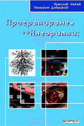

Преслав Наков, Панайот Добриков,
TopTeam Co., 2003, 696 страници
ISBN 954-8905-06-X
|

|
Програмиране
= ++Алгоритми;
Преслав Наков, Панайот Добриков, TopTeam Co., 2003, 696 страници ISBN 954-8905-06-X |
Литература на български език за С++, алгоритмите и програмирането